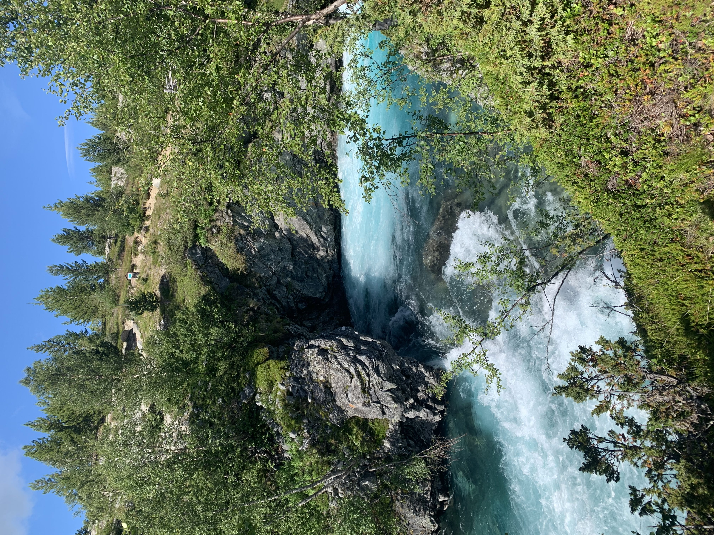
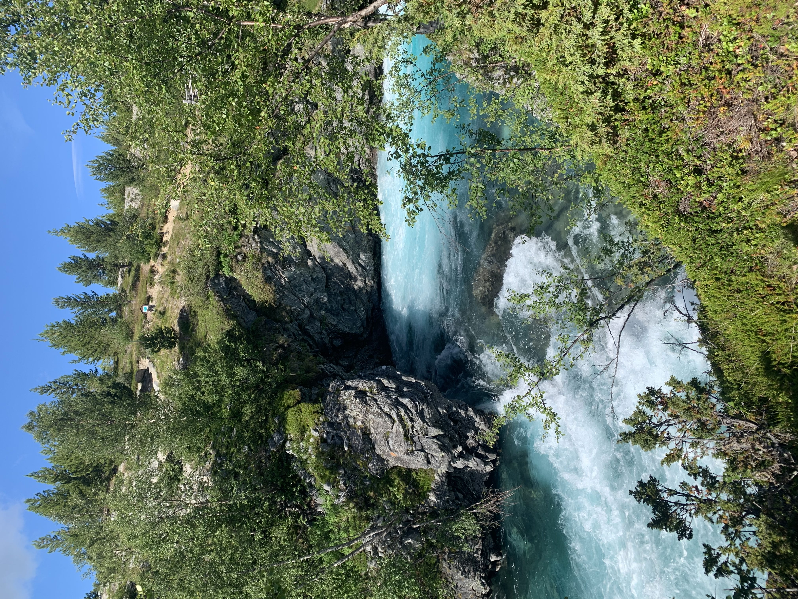

About me

Hobbies
- Digital drawing
- Traveling
- Learning languages
- Playing piano
- Photography
Uliana Aseeva
- 20 years old
- From Estonia
- NMD first year student
I decided to study New Media Design, because I would like to work in a field of Graphic Design and would like to acquire all necessary knowledge for my future career.
 
